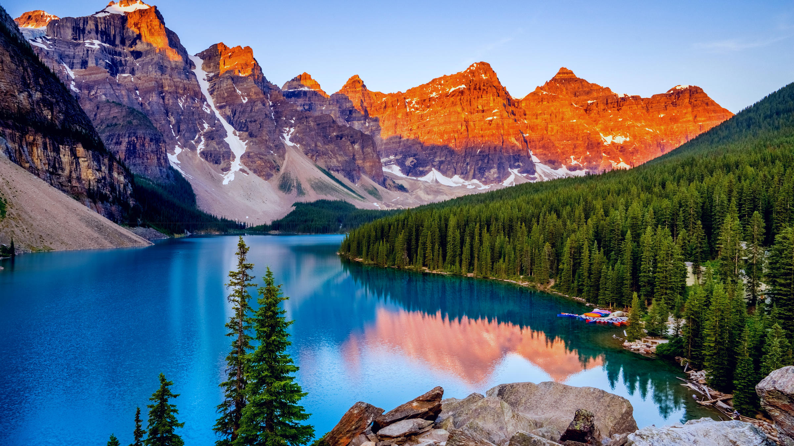
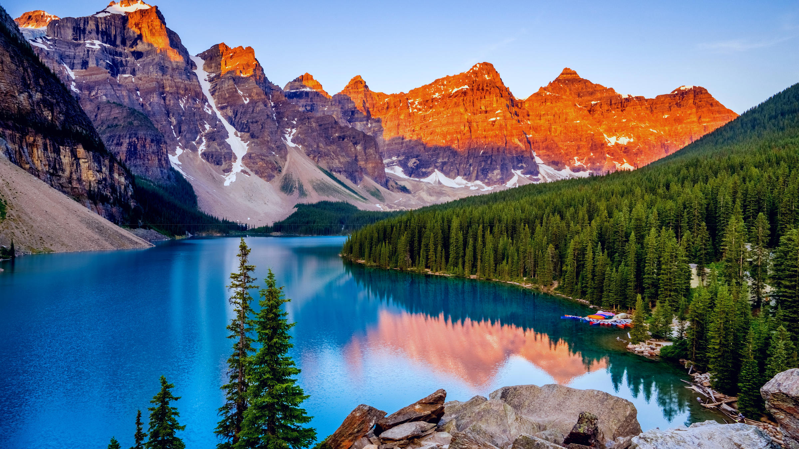

Toronto est la plus grande ville du Canada devant Montréal et la capitale de la province de l'Ontario.
La ville est située sur la rive nord-ouest du lac Ontario.
Avec plus de 2,5 millions d'habitants, Toronto est la cinquième plus grande ville en Amérique du Nord.
En 2006, 5 113 149 personnes vivaient dans la région du Grand Toronto ainsi que 8,1 millions dans la mégapole du Croissant d'or.
Toronto est la principale place financière et économique du Canada et la deuxième en Amérique du Nord.
Montréal est la métropole du Québec.
La ville est située sur une île dont la superficie atteint 500 km2.
L'île est située entre la rivière des Prairies (au nord-ouest) et le fleuve Saint-Laurent (au sud-est).
Elle constitue un centre majeur du commerce, de l'industrie, de la culture, de la finance et des affaires internationales.
Montréal est la quatrième agglomération francophone de langue officielle dans le monde et la seule métropole francophone en Amérique du Nord.
Elle est aussi, après Toronto, la deuxième agglomération canadienne en importance ainsi qu'une des villes financières les plus importantes dans le monde.
Vancouver est une ville portuaire et la métropole de l'Ouest canadien.
Elle est la troisième agglomération canadienne en importance.
Relativement peu occupé par l'activité humaine, le Canada jouit d'une grande biodiversité.
Sa superficie est protégée par quarante-deux parcs nationaux dont deux aires marines.

 
